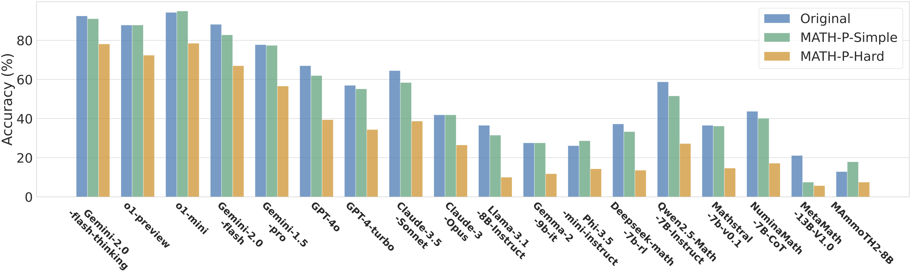

Leaderboard work in progress.
Left: The overview of MATH-Perturb Benchmark. Right: An example of the original problem, its simple perturbation, its hard perturbation, and the corresponding model responses that overfit the short-cut solution. The simple perturbation to the problem is non-essential, so the modified problem can be solved using the same method as the original problem. The hard perturbation changes the problem fundamentally and it requires more difficult problem-solving skills. The shortcut solution can solve the original problem and its simple perturbation but fails on the hard perturbation.
Large language models have demonstrated impressive performance on challenging mathematical reasoning tasks, which has triggered the discussion of whether the performance is achieved by true reasoning capability or memorization. To investigate this question, we construct MATH-P-Simple and MATH-P-Hard, each consisting of 279 perturbed math problems derived from level-5 (hardest) problems in the MATH dataset (Hendrycks et. al., 2021):
 We observe significant performance drops on MATH-P-Hard across various models. We also raise concerns about a novel form of memorization where models blindly apply learned problem-solving skills without assessing their applicability to modified contexts. This issue is amplified when using original problems for in-context learning. We call for research efforts to address this challenge, which is critical for developing more robust and reliable reasoning models.
Leaderboard work in progress.
@article{huang2025math,
title={{MATH-Perturb}: Benchmarking {LLMs}' Math Reasoning Abilities against Hard Perturbations},
author={Kaixuan Huang and Jiacheng Guo and Zihao Li and Xiang Ji and Jiawei Ge and Wenzhe Li and Yingqing Guo and Tianle Cai and Hui Yuan and Runzhe Wang and Yue Wu and Ming Yin and Shange Tang and Yangsibo Huang and Chi Jin and Xinyun Chen and Chiyuan Zhang and Mengdi Wang},
journal={arXiv preprint arXiv:2502.06453},
year={2025}
}